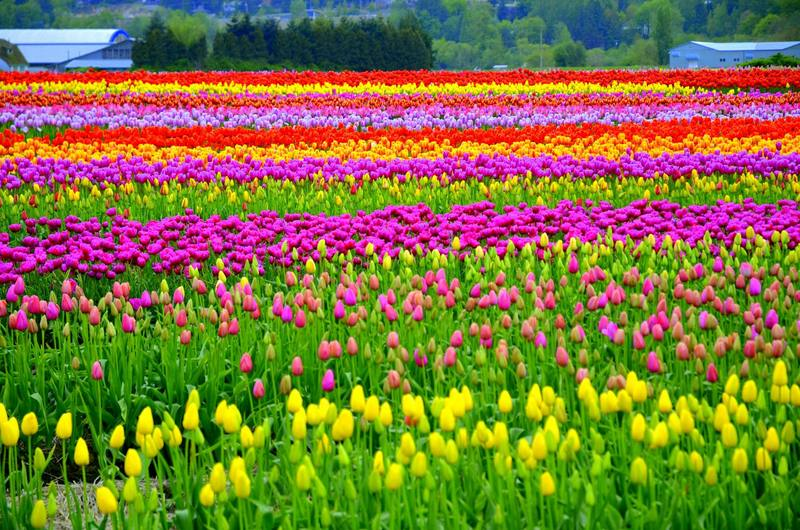
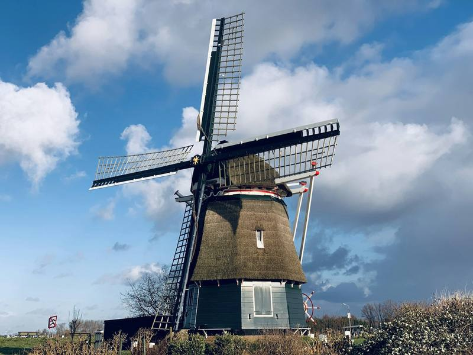
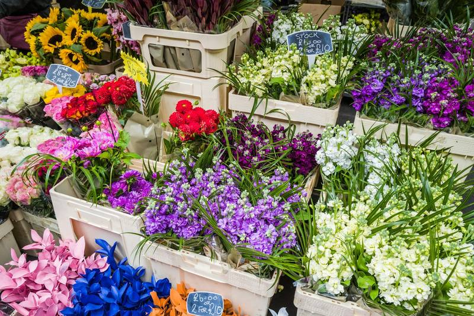

Sobre e arredores
Uma casa de família em Holambra
A história do Quintal dos Moinhos e o que fazer por perto.

Nossa história
Tudo começou em um quintal
O Quintal dos Moinhos nasceu do quintal de uma casa de família, a poucos passos da praça central de Holambra: um terreno de hortênsias, uma mesa comprida e vontade de receber bem.
Quarto a quarto, a casa virou hotel, mas não perdeu o jeito. O balcão da recepção ainda é de madeira, o café é feito pela manhã e o jardim continua sendo o melhor cômodo.
Hoje são 24 quartos, ocupados por casais, famílias e quem vem ver os campos de flores.
Arredores
O que fazer perto do hotel
Dicas da equipe do hotel. Os tempos são aproximados, e a recepção ajuda a montar o seu roteiro.

Poucos minutos de carro
Campos de flores
Holambra vive de flores, e os campos de tulipas e outras flores ficam logo na saída da cidade. Cada época do ano tem a sua cor: pergunte na recepção o que está florido na sua semana.

Poucos minutos de carro
Moinho de vento
O moinho de vento é o cartão-postal da cidade e lembra a origem holandesa de Holambra. Vale ir no fim da tarde, quando a luz é mais bonita para fotos.

A pé, em poucos minutos
Praça central e restaurantes
Da porta do hotel você chega a pé à praça, às floriculturas, às padarias e aos restaurantes de comida holandesa e brasileira. Dá para ir e voltar sem pegar o carro.
Reserve com antecedência
Expoflora, em setembro
Em setembro, a cidade recebe a Expoflora, a grande exposição de flores e plantas. É a nossa época mais cheia: quem quer ficar aqui costuma reservar com meses de antecedência.
Reservas
Venha conhecer Holambra
Reserve o seu quarto e deixe o roteiro com a gente.